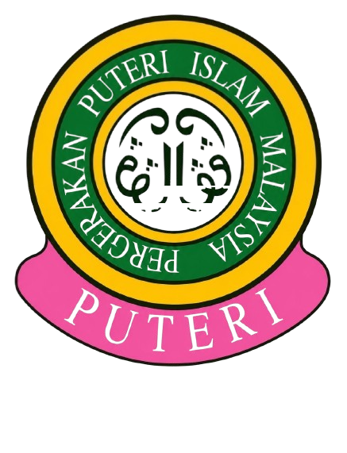

SIJIL
EJEN PENJAGA
KEMUDAHAN AWAM
Pergerakan Puteri Islam Malaysia — Sekolah Kebangsaan
Diberikan kepada
kerana berjaya menyelesaikan
Treasure Hunt Kemudahan Awam
✦ Tahniah! ✦
* Kertas Ivory Card 230gsm disyorkan untuk cetakan sijil.
Hlm 12/12